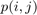
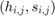
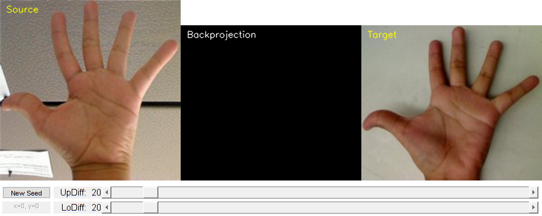

Back Projection
In this demo, we will learn:
- What is Back Projection and why it is useful
- How to use the OpenCV function cv.calcBackProject to calculate Back Projection
Sources:
- https://docs.opencv.org/3.2.0/da/d7f/tutorial_back_projection.html
- https://docs.opencv.org/3.2.0/dc/df6/tutorial_py_histogram_backprojection.html
- https://github.com/opencv/opencv/blob/3.2.0/samples/cpp/tutorial_code/Histograms_Matching/calcBackProject_Demo1.cpp
- https://github.com/opencv/opencv/blob/3.2.0/samples/cpp/tutorial_code/Histograms_Matching/calcBackProject_Demo2.cpp
Contents
Theory
Back Projection is a way of recording how well the pixels of a given image fit the distribution of pixels in a histogram model. To make it simpler, for Back Projection, you calculate the histogram model of a feature and then use it to find this feature in an image. Application example: If you have a histogram of flesh color (say, a Hue-Saturation histogram), then you can use it to find flesh color areas in an image.
We explain how it works by using the skin example. Let's say you have gotten a skin histogram (Hue-Saturation) based on the image below. The histogram besides is going to be our model histogram (which we know represents a sample of skin tonality). You applied some mask to capture only the histogram of the skin area:


Now, let's imagine that you get another hand image (test Image) like the one below, with its respective histogram:


What we want to do is to use our model histogram (that we know represents a skin tonality) to detect skin areas in our test image. Here are the steps
- In each pixel of our test image (i.e.  ), collect the data and find the correspondent bin location for that pixel (i.e.  ).
- Lookup the model histogram in the correspondent bin, , and read the bin value.
- Store this bin value in a new image (BackProjection). Also, you may consider to normalize the model histogram first, so the output for the test image can be visible for you.
- Applying the steps above, we get the following BackProjection image for our test image:

- In terms of statistics, the values stored in BackProjection represent the probability that a pixel in test image belongs to a skin area, based on the model histogram that we use. For instance in our test image, the brighter areas are more probable to be skin area (as they actually are), whereas the darker areas have less probability (notice that these "dark" areas belong to surfaces that have some shadow on it, which in turns affects the detection).
Code
The steps:
- Load an image
- Convert the original to HSV format and separate only Hue channel to be used for the Histogram
- Let the user to enter the number of bins to be used in the calculation of the histogram.
- Calculate the histogram (and update it if the bins change) and the backprojection of the same image.
- Display the backprojection and the histogram in windows.
The code in this sample doesn't implement the basic version explained above. In fact it improves the process by building a 2D H-S histograms and using cv.floodFill to define a mask for the skin area. For more, you can also checkout the classical camshift sample in camshift_demo_gui.m.
function varargout = backproject_demo_gui() % load images (base image and test image) imgs = loadImages(); % create the UI h = buildGUI(imgs); if nargout > 0, varargout{1} = h; end end
Helper functions
function imgs = loadImages() %LOADIMAGES Load source and target images % source and target images im = { 'https://docs.opencv.org/3.2.0/Histogram_Comparison_Source_0.jpg' 'https://docs.opencv.org/3.2.0/Histogram_Comparison_Source_1.jpg' }; imgs = cell(size(im)); for i=1:numel(im) % download if necessary [~,name,ext] = fileparts(im{i}); fname = fullfile(mexopencv.root(), 'test', [name ext]); if exist(fname, 'file') ~= 2 disp('Downloading image...') urlwrite(im{i}, fname); end % load image imgs{i} = cv.imread(fname, 'Color',true); % upsample, images are a bit small s = 1.5; imgs{i} = cv.resize(imgs{i}, s, s); end end function pt = getSeedPoint(img) %GETSEEDPOINT Prompt user for flood-fill seed point % % See also: ginput, getpts, impixel, waitforbuttonpress, CurrentPoint % sz = [size(img,2) size(img,1)]; pt0 = round(sz/2); valid = @(p) ~isempty(p) && all((p(:) > 0) & (p(:) <= sz(:))); if ~mexopencv.isOctave() % display image, and prompt user for seed point fig = figure('Menubar','none', 'WindowStyle','Modal'); imshow(img), axis on title('Select seed point'), xlabel('X'), ylabel('Y') try while true [x,y] = ginput(1); pt = round([x y]); if valid(pt), break; end end catch pt = pt0; end if ishghandle(fig), close(fig); end elseif true %HACK: for some reason, Octave never returns from GINPUT in code above % fallback to using an input dialog to prompt for seed point while true str = arrayfun(@num2str, pt0, 'UniformOutput',false); str = inputdlg({'seed.x','seed.y'}, 'Seed Point', 1, str); pt = str2double(str); if valid(pt), break; end end else %pt = pt0; pt = [120 100]; end end function mask = floodFillMask(img, seed, lo, up) %FLOODFILLMASK Flood-fill source image to create mask over object % create mask image (padded by 1 pixel in both directions) sz = size(img); mask = zeros(sz(1:2) + 2, 'uint8'); % flood-fill the mask image starting at the seed [~,~,~,mask] = cv.floodFill(img, seed, [120 120 120], ... 'Mask',mask, 'MaskOnly',true, 'MaskFillValue',255, ... 'LoDiff',[lo lo lo], 'UpDiff',[up up up], ... 'FixedRange',true, 'Connectivity',8); mask = mask(2:end-1,2:end-1); if true % process the mask (morphological closing) el = cv.getStructuringElement('Shape','Ellipse', 'KSize',[5 5]); mask = cv.morphologyEx(mask, 'Close', 'Element',el); end end function [histo, hue] = computeHistogram(img, mask, nbins) %COMPUTEHISTOGRAM Compute hue/saturation histogram if nargin < 2, mask = []; end if nargin < 3, nbins = [30 32]; end % convert source image to HSV colorspace imgHSV = cv.cvtColor(img, 'RGB2HSV'); if nargout > 1 hue = imgHSV(:,:,1); end % compute H-S histogram of source image, with mask indicating object ranges = {[0 180], [0 256]}; histo = cv.calcHist(imgHSV, ranges, 'HistSize',nbins, 'Uniform',true, .... 'Channels',[0 1], 'Mask',mask); % normalize it to [0,255] range histo = cv.normalize(histo, 'NormType','MinMax', 'Alpha',0, 'Beta',255); end function [prob,mask] = computeBackprojection(img, histo) %COMPUTEBACKPROJECTION Target image backproject % convert target image to HSV colorspace imgHSV = cv.cvtColor(img, 'RGB2HSV'); % backproject the target image using source histogram ranges = {[0 180], [0 256]}; prob = cv.calcBackProject(imgHSV, histo, ranges, 'Uniform',true, ... 'Channels',[0 1]); if nargout > 1 % process backprojection to extract object in target image el = cv.getStructuringElement('Shape','Ellipse', 'KSize',[7 7]); mask = cv.filter2D(prob, el); mask = cv.morphologyEx(mask, 'Close', 'Element',el, 'Iterations',3); mask = cv.threshold(mask, 'Otsu'); end end function out = createOutputImage(img, mask) %CREATEOUTPUTIMAGE Combine image and mask for output maskRGB = cv.cvtColor(mask, 'GRAY2RGB'); if true % overlay mask with transparency if true maskRGB(:,:,3) = 0; overlay = cv.bitwise_or(img, maskRGB); elseif true maskRGB(:,:,3) = 0; overlay = cv.copyTo(maskRGB, 'Dest',img, 'Mask',mask); else mask = logical(mask); R = img(:,:,1); R(mask) = 255; G = img(:,:,2); G(mask) = 255; B = img(:,:,2); B(mask) = 0; overlay = cat(3, R, G, B); end a = 0.4; out = cv.addWeighted(overlay,a, img,1-a, 0.0); elseif true % cut-out mask region out = cv.bitwise_and(img, maskRGB); else % binary mask out = maskRGB; end end function showHistogram(histo) %SHOWHISTOGRAM Display 2D histogram ranges = {[0 180], [0 256]}; figure, imagesc(histo, 'YData',ranges{1}, 'XData',ranges{2}) ylabel('Hue'), xlabel('Saturation'), title('H-S histogram') colormap gray end function img = drawTitle(img, str) %DRAWTITLE Draw title on output image img = cv.putText(img, str, [10 20], ... 'FontScale',0.5, 'Color',[255 255 0], 'LineType','AA'); end function [outSrc, outBackprob, outTarget] = process(h, seed, lo, up) %PROCESS Run algorithm steps % flood-fill source image starting at seed to create object mask maskSrc = floodFillMask(h.src, seed, lo, up); outSrc = createOutputImage(h.src, maskSrc); % compute 2D histogram of masked object in source, and backproject target histo = computeHistogram(h.src, maskSrc); [outBackprob,maskTarget] = computeBackprojection(h.target, histo); outTarget = createOutputImage(h.target, maskTarget); % overlay titles on output images outSrc = drawTitle(outSrc, 'Source'); outBackprob = drawTitle(outBackprob, 'Backprojection'); outTarget = drawTitle(outTarget, 'Target'); end
UI and callbacks
function onType(~,e,h) %ONTYPE Event handler for key press on figure switch e.Key case {'q', 'escape'} close(h.fig); end end function onChange(~,~,h) %ONCHANGE Event handler for slider % fetch and update threshold values lo = round(get(h.slid(1), 'Value')); up = round(get(h.slid(2), 'Value')); set(h.txt(1), 'String',sprintf('LoDiff: %3d',lo)); set(h.txt(2), 'String',sprintf('UpDiff: %3d',up)); % get current seed point x = get(h.lin, 'XData'); y = get(h.lin, 'YData'); seed = [x(1) y(1)]; if any(isnan(seed)) % user didn't specify a seed point yet return; end % apply new values and show results [outSrc, outBackprob, outTarget] = process(h, seed, lo, up); set(h.img(1), 'CData',outSrc); set(h.img(2), 'CData',outBackprob); set(h.img(3), 'CData',outTarget); end function onClick(~,~,h) %ONCLICK Event handler for button % prompt user for a new seed point in source image seed = getSeedPoint(h.src); set(h.lin, 'XData',seed(1), 'YData',seed(2)); set(h.txt(3), 'String',sprintf('x=%d, y=%d',seed)); % get current threshold values lo = round(get(h.slid(1), 'Value')); up = round(get(h.slid(2), 'Value')); % apply new values and show results [outSrc, outBackprob, outTarget] = process(h, seed, lo, up); set(h.img(1), 'CData',outSrc); set(h.img(2), 'CData',outBackprob); set(h.img(3), 'CData',outTarget); end function h = buildGUI(imgs) %BUILDGUI Creates the UI % vis props sz = cellfun(@size, imgs, 'UniformOutput',false); sz = cat(1, sz{:}); H = max(sz(:,1)); W = sz(1,2) + sz(2,2)*2; % flood-fill options (seed and low/high thresholds) seed = [0 0]; lo = 20; up = 20; % overlay titles img2 = zeros(size(imgs{2},1), size(imgs{2},2), 'uint8'); img1 = drawTitle(imgs{1}, 'Source'); img2 = drawTitle(img2, 'Backprojection'); img3 = drawTitle(imgs{2}, 'Target'); % build the user interface (no resizing to keep it simple) h = struct(); h.src = imgs{1}; h.target = imgs{2}; h.fig = figure('Name','Backpoject Demo', 'NumberTitle','off', ... 'Menubar','none', 'Resize','off', 'Position',[200 200 W H+60-1]); if ~mexopencv.isOctave() %HACK: not implemented in Octave movegui(h.fig, 'center'); end h.ax(1) = axes('Parent',h.fig, ... 'Units','pixels', 'Position',[1 60 sz(1,2) sz(1,1)]); h.ax(2) = axes('Parent',h.fig, ... 'Units','pixels', 'Position',[sz(1,2)+1 60 sz(2,2) sz(2,1)]); h.ax(3) = axes('Parent',h.fig, ... 'Units','pixels', 'Position',[sz(1,2)+sz(2,2)+1 60 sz(2,2) sz(2,1)]); if ~mexopencv.isOctave() h.img(1) = imshow(img1, 'Parent',h.ax(1)); h.img(2) = imshow(img2, 'Parent',h.ax(2)); h.img(3) = imshow(img3, 'Parent',h.ax(3)); else %HACK: https://savannah.gnu.org/bugs/index.php?45473 axes(h.ax(1)); h.img(1) = imshow(img1); axes(h.ax(2)); h.img(2) = imshow(img2); axes(h.ax(3)); h.img(3) = imshow(img3); end opts = {'FontSize',11, 'HorizontalAlignment','right'}; h.lin = line(NaN, NaN, 'Parent',h.ax(1), 'Color','g', ... 'LineWidth',2, 'LineStyle','none', 'Marker','x', 'MarkerSize',10); h.but = uicontrol('Parent',h.fig, 'Style','pushbutton', ... 'Position',[5 30 80 20], 'String','New Seed'); h.txt(1) = uicontrol('Parent',h.fig, 'Style','text', opts{:}, ... 'Position',[90 5 80 20], 'String',sprintf('LoDiff: %3d',lo)); h.txt(2) = uicontrol('Parent',h.fig, 'Style','text', opts{:}, ... 'Position',[90 30 80 20], 'String',sprintf('UpDiff: %3d',up)); h.txt(3) = uicontrol('Parent',h.fig, 'Style','text', 'FontSize',8, ... 'Position',[5 5 80 20], 'Enable','off', ... 'String',sprintf('x=%d, y=%d',seed)); h.slid(1) = uicontrol('Parent',h.fig, 'Style','slider', 'Value',lo, ... 'Min',0, 'Max',255, 'SliderStep',[1 10]./(255-0), ... 'Position',[170 5 W-170-5 20]); h.slid(2) = uicontrol('Parent',h.fig, 'Style','slider', 'Value',up, ... 'Min',0, 'Max',255, 'SliderStep',[1 10]./(255-0), ... 'Position',[170 30 W-170-5 20]); % hook event handlers opts = {'Interruptible','off', 'BusyAction','cancel'}; set(h.fig, 'WindowKeyPressFcn',{@onType,h}, opts{:}); set(h.slid, 'Callback',{@onChange,h}, opts{:}); set(h.but, 'Callback',{@onClick,h}, opts{:}); end